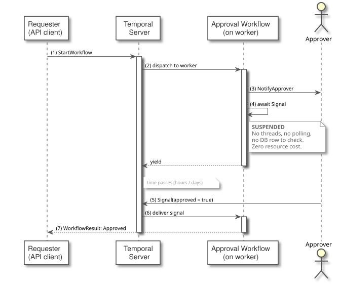
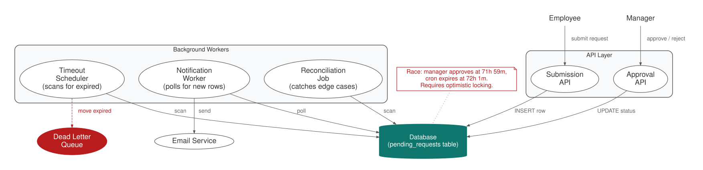

The Durable Promise (External Fulfillment)
Suspend execution indefinitely at a named await point that can be fulfilled by an external actor at any future time — seconds, hours, or months later.
Intent. A workflow needs to pause and wait for something that happens outside the system’s control: a human approval, a webhook callback, a payment confirmation, a signed document. The Durable Promise suspends execution at a named point, persists the suspension durably, and resumes only when an external actor signals fulfillment — or a deadline expires.
Motivation. An employee submits an expense report. Their manager must review and approve or reject it. The manager might respond in five minutes or five days. The system must wait — not poll a database table every thirty seconds, not give up after an hour, not lose the request if a server restarts over the weekend.
This scenario shows up everywhere: purchase order approvals, KYC document reviews, contract counter-signatures, OAuth authorization callbacks, and any integration where a third party calls you back at an unpredictable time. The defining characteristic is that the delay is unbounded and external. Your system can’t speed it up. It can only wait.
The Pattern

The Awaiting Workflow is a durable workflow that reaches a point where it can’t proceed without external input. It registers a handler for external messages (a signal handler in Temporal) and blocks — durably. The runtime persists the workflow’s event history, so the process can wait for days or weeks without consuming resources. The External Actor is whatever provides the awaited input: a human clicking "Approve" in a UI, a webhook from a payment processor, an API call from a partner system. It fulfills the promise by sending a signal to the workflow. An optional Deadline Timer fires if the external actor doesn’t respond within a specified duration. The workflow races the signal against the timer — whichever resolves first wins.
Traditionally, building an approval system means assembling infrastructure components that each know about a different slice of the problem: a database table for pending requests, a submission API, a notification worker that polls for new rows and sends emails, an approval API, a cron job scanning for expired deadlines, and a reconciliation job for requests that slip through the cracks. Every one of these components polls the same database table. The cron-vs-approval race alone — manager clicks "Approve" at 71 hours 59 minutes, cron fires at 72 hours 1 minute — requires optimistic locking or compare-and-swap to avoid marking an approved request as expired.

With Durable Execution. The same approval process, expressed as a single workflow:
@Override
public String run(ApprovalRequest request) {
// Notify the approver
activities.sendApprovalRequest(request);
// Wait for external fulfillment OR deadline — whichever comes first
boolean fulfilled = Workflow.await( (1)
Duration.ofDays(request.deadlineDays()), (2)
() -> approvalResult != null);
if (!fulfilled) {
// Deadline expired without approval
activities.sendDeadlineExpired(request);
return "EXPIRED";
}
// Process the approval decision
if ("APPROVED".equals(approvalResult)) {
activities.processApproval(request);
} else {
activities.processRejection(request);
}
return approvalResult;
}
@Override
public void approve() { (3)
approvalResult = "APPROVED";
}
@Override
public void reject() {
approvalResult = "REJECTED";
}
@Override
public String getStatus() {
if (approvalResult == null) return "PENDING";
return approvalResult;
}| 1 | The workflow blocks at this signal — durably. The process can wait for days. |
| 2 | A deadline timer runs in parallel. Whichever resolves first wins. |
| 3 | The external actor sends a signal to resume the workflow. |
The key line is the Workflow.await call — a condition and a deadline in a
single expression. This replaces the database row, the cron job, and the race
condition between them. The runtime blocks the workflow until
either the condition becomes true (a signal sets approvalResult) or the
duration expires. There’s no polling. The workflow consumes no resources
while waiting. If the worker restarts during the wait, the runtime
reconstructs the timer and the signal handler from the event history and
continues.
The approve() and reject() methods are signal handlers. When the manager
clicks "Approve" in the UI, the frontend calls the runtime’s client API with the
workflow ID and message type. The runtime delivers the signal to the workflow,
which sets approvalResult and wakes up from the await. The race condition
between the timer and the signal is handled by the runtime — Workflow.await
is atomic with respect to the workflow’s execution. If the signal arrives one
millisecond before the deadline, the condition evaluates to true and the timer
is irrelevant. If the deadline fires first, fulfilled is false and the
workflow takes the expiration path.
Consequences. The Durable Promise eliminates polling infrastructure entirely. A workflow can wait for a signal for days, weeks, or months without consuming compute resources and without a database table tracking its pending state. The deadline is a first-class concept, not a cron job bolted on after the fact.
The trade-off is that the external actor must know the workflow ID and the message type (the signal name in Temporal). This is straightforward when the actor is your own UI (the approval link contains the workflow ID), but more complex when the actor is an external webhook. You’ll need to store the workflow ID somewhere the webhook handler can retrieve it — typically by using a correlation ID from the original request as the workflow ID itself, or by storing the mapping in a lightweight lookup table.
Another consideration is message ordering. If the workflow expects exactly
one signal (approve or reject) but the external system sends both (a UI bug, a
webhook retry), the workflow must handle the duplicate. The approve() and
reject() methods in the example overwrite approvalResult, so the last
signal wins. Whether that’s correct depends on your business rules.
Distinction from the Entity. Both patterns receive signals, but the Entity (Chapter 1) sits in a loop accepting commands indefinitely — it’s a long-lived object. The Durable Promise blocks once, waiting for a single fulfillment event, then moves on. If you’re modeling an object with ongoing state mutations, use the Entity. If you’re pausing a workflow for one external response, you’re looking at a Durable Promise.
Known Applications
-
Expense and purchase order approvals
-
KYC/AML document review
-
Contract counter-signatures
-
Webhook callbacks from payment processors and shipping providers
-
Multi-party agreement flows (all parties must sign before proceeding)
Related Patterns